Last updated: 2020-03-05
Checks: 7 0
Knit directory: ebpmf_demo/
This reproducible R Markdown analysis was created with workflowr (version 1.5.0). The Checks tab describes the reproducibility checks that were applied when the results were created. The Past versions tab lists the development history.
Great! Since the R Markdown file has been committed to the Git repository, you know the exact version of the code that produced these results.
Great job! The global environment was empty. Objects defined in the global environment can affect the analysis in your R Markdown file in unknown ways. For reproduciblity it’s best to always run the code in an empty environment.
The command set.seed(20190923) was run prior to running the code in the R Markdown file. Setting a seed ensures that any results that rely on randomness, e.g. subsampling or permutations, are reproducible.
Great job! Recording the operating system, R version, and package versions is critical for reproducibility.
Nice! There were no cached chunks for this analysis, so you can be confident that you successfully produced the results during this run.
Great job! Using relative paths to the files within your workflowr project makes it easier to run your code on other machines.
Great! You are using Git for version control. Tracking code development and connecting the code version to the results is critical for reproducibility. The version displayed above was the version of the Git repository at the time these results were generated.
Note that you need to be careful to ensure that all relevant files for the analysis have been committed to Git prior to generating the results (you can use wflow_publish or wflow_git_commit). workflowr only checks the R Markdown file, but you know if there are other scripts or data files that it depends on. Below is the status of the Git repository when the results were generated:
Ignored files:
Ignored: .RData
Ignored: .Rhistory
Ignored: .Rproj.user/
Ignored: analysis/anchor_word_model_swimmer_cache/
Ignored: analysis/compare_GH_cache/
Ignored: analysis/compare_speeds_ebpmf_cache/
Ignored: analysis/ebpm_two_gamma_debug2_cache/
Ignored: analysis/experiment_ebpm_gammamix2_cache/
Ignored: analysis/experiment_ebpm_gammamix3_cache/
Ignored: analysis/experiment_ebpm_gammamix_cache/
Ignored: analysis/investigate_gamma_poisson_cache/
Ignored: analysis/nmf_anchor_word3_cache/
Ignored: analysis/nmf_anchor_word4_cache/
Ignored: analysis/nmf_sparse10_cache/
Ignored: analysis/nmf_sparse11_cache/
Ignored: analysis/nmf_sparse8_cache/
Ignored: analysis/nmf_sparse9_cache/
Ignored: analysis/test_ebpmf_two_gamma_fast_cache/
Untracked files:
Untracked: Rplot.png
Untracked: Untitled.Rmd
Untracked: Untitled.html
Untracked: analysis/.ipynb_checkpoints/
Untracked: analysis/Experiment_ebpmf_simple.Rmd
Untracked: analysis/anchor_word_model1.Rmd
Untracked: analysis/anchor_word_model2.Rmd
Untracked: analysis/anchor_word_model3.Rmd
Untracked: analysis/compare_speeds_ebpmf.Rmd
Untracked: analysis/debug_ebpmf_two_gamma.Rmd
Untracked: analysis/demo_ebpmf_beta_gamma.Rmd
Untracked: analysis/demo_ebpmf_two_gamma2.Rmd
Untracked: analysis/demo_ebpmf_two_gamma_cache_old/
Untracked: analysis/draft.Rmd
Untracked: analysis/ebpm_gamma_mixture_experiment.Rmd
Untracked: analysis/ebpm_gh_gamma.Rmd
Untracked: analysis/ebpm_two_gamma_test.R
Untracked: analysis/ebpm_two_gamma_test.Rmd
Untracked: analysis/ebpmf.Rmd
Untracked: analysis/ebpmf_demo.Rmd
Untracked: analysis/ebpmf_rank1_demo2.Rmd
Untracked: analysis/ebpmf_two_gamma_debug.Rmd
Untracked: analysis/investigate_gamma_poisson.Rmd
Untracked: analysis/investigate_nmf_sparse.Rmd
Untracked: analysis/nmf_anchor_word4.Rmd
Untracked: analysis/nmf_sparse11.Rmd
Untracked: analysis/nmf_symm.Rmd
Untracked: analysis/play_prior.Rmd
Untracked: analysis/play_shrinkage_methods.Rmd
Untracked: analysis/plot_g.Rmd
Untracked: analysis/rebayes_vignette.Rmd
Untracked: analysis/softmax_experiments.ipynb
Untracked: analysis/test_ebpmf_two_gamma_fast.Rmd
Untracked: cache/
Untracked: code/anchor-word-recovery/
Untracked: data/anchor_word_model1.csv
Untracked: data/nmf_anchor_word3_A.csv
Untracked: data/nmf_anchor_word3_W.csv
Untracked: data/nmf_anchor_word3_X.csv
Untracked: data/nmf_anchor_word4_A.csv
Untracked: data/nmf_anchor_word4_W.csv
Untracked: data/nmf_sparse8_fit_ebpmf_gm_mle.Rds
Untracked: data/nmf_sparse8_fit_ebpmf_gm_mlem.Rds
Untracked: data/nmf_sparse_ebpm_gamma_mixture2.Rds
Untracked: data/nmf_sparse_ebpm_gamma_mixture2_change_grids_per_10_iter.Rds
Untracked: data/nmf_sparse_ebpm_gamma_mixture2_change_grids_per_5000_iter.Rds
Untracked: data/swimmer.mat
Untracked: figure/
Untracked: script/nmf_sparse_ebpm_gammamix2_change_grids.R
Untracked: verbose_log_1571583163.21966.txt
Untracked: verbose_log_1571583324.71036.txt
Untracked: verbose_log_1571583741.94199.txt
Untracked: verbose_log_1571588102.40356.txt
Unstaged changes:
Modified: .gitignore
Modified: analysis/Compare_ebpmf_nmf.Rmd
Modified: analysis/Compare_ebvaepm_ebpm.Rmd
Modified: analysis/Experiment_ebpmf_rank1.Rmd
Modified: analysis/demo_ebpm_beta_gamma2.Rmd
Modified: analysis/dnbinom.Rmd
Modified: analysis/ebpm_demo.Rmd
Modified: analysis/nmf_anchor_word2.Rmd
Modified: analysis/nmf_anchor_word3.Rmd
Modified: analysis/nmf_sparse.Rmd
Modified: analysis/nmf_sparse2.Rmd
Modified: analysis/nmf_sparse3.Rmd
Modified: analysis/nmf_sparse6.Rmd
Modified: analysis/nmf_sparse7.Rmd
Modified: analysis/nmf_sparse8.Rmd
Modified: analysis/nmf_sparse9.Rmd
Modified: analysis/numerical_lgamma.Rmd
Modified: analysis/softmax_experiments.Rmd
Modified: analysis/test_ebpm_gamma_mixture_single_scale.Rmd
Modified: code/misc.R
Modified: data/nmf_sparse8_fit_ebpmf_gm.Rds
Note that any generated files, e.g. HTML, png, CSS, etc., are not included in this status report because it is ok for generated content to have uncommitted changes.
These are the previous versions of the R Markdown and HTML files. If you’ve configured a remote Git repository (see ?wflow_git_remote), click on the hyperlinks in the table below to view them.
| File | Version | Author | Date | Message |
|---|---|---|---|---|
| Rmd | cd0a761 | zihao12 | 2020-03-06 | nmf_sparse_experiment.Rmd |
| html | 14d6139 | zihao12 | 2020-03-06 | Build site. |
| Rmd | 2c0bc76 | zihao12 | 2020-03-06 | nmf_sparse_experiment.Rmd |
See https://zihao12.github.io/ebpmf_demo/nmf_sparse_data_prep
ebpm_two_gamma_fast5, so I only ran 950 iterations.rm(list = ls())
library(ggplot2)Warning: package 'ggplot2' was built under R version 3.5.2source("code/misc.R")data = readRDS("data/nmf_sparse_data.Rds")
fit_tg_slow = readRDS("data/nmf_sparse_ebpm_tg_slow.Rds")
fit_tg = readRDS("data/nmf_sparse_ebpm_two_gamma.Rds")
fit_tg_fast5 = readRDS("data/nmf_sparse_ebpm_two_gamma_fast5.Rds")
fit_pg = readRDS("data/nmf_sparse_ebpm_point_gamma.Rds")
fit_gm = readRDS("data/nmf_sparse_ebpm_gamma_mixture2.Rds")
fit_gm_change_grid = readRDS("data/nmf_sparse_ebpm_gamma_mixture2_change_grids_per_10_iter.Rds")
## since `ebpm_two_gamma_fast5` is 50 iterations short, I just assume it makes no progress at all in the last 50 iterations
fit_tg_fast5$ELBO = c(fit_tg_fast5$ELBO, replicate(50, fit_tg_fast5$ELBO[950]))lam = data$L %*% t(data$F)
lam_tg_slow = fit_tg_slow$qg$qls_mean %*% t(fit_tg_slow$qg$qfs_mean)
lam_tg = fit_tg$qg$qls_mean %*% t(fit_tg$qg$qfs_mean)
lam_tg_fast = fit_tg_fast5$qg$qls_mean %*% t(fit_tg_fast5$qg$qfs_mean)
lam_pg = fit_pg$qg$qls_mean %*% t(fit_pg$qg$qfs_mean)
lam_gm = fit_gm$qg$qls_mean %*% t(fit_gm$qg$qfs_mean)
rmse = c(RMSE(lam, lam_tg_slow), RMSE(lam, lam_tg),
RMSE(lam, lam_tg_fast), RMSE(lam, lam_pg), RMSE(lam, lam_gm))
kl = c(KL(lam, lam_tg_slow), KL(lam, lam_tg),
KL(lam, lam_tg_fast), KL(lam, lam_pg), KL(lam, lam_gm))
js = c(JS(lam, lam_tg_slow), JS(lam, lam_tg),
JS(lam, lam_tg_fast), JS(lam, lam_pg), JS(lam, lam_gm))
maxiter = 1000
elbo = c(fit_tg_slow$ELBO[maxiter], fit_tg$ELBO[maxiter],
fit_tg_fast5$ELBO[maxiter], fit_pg$ELBO[maxiter], fit_gm$ELBO[maxiter])
runtime = c(fit_tg_slow$runtime[[3]], fit_tg$runtime[[3]],
fit_tg_fast5$runtime[[3]], fit_pg$runtime[[3]], fit_gm$runtime[[3]])
data.frame(rmse = rmse, kl = kl, js = js, elbo = elbo, runtime = runtime,
row.names = c("tg_slow", "tg", "tg_fast5", "pg", "gm")) rmse kl js elbo runtime
tg_slow 0.6099528 830.8184 829.9983 227965.1 1368.306
tg 0.6033905 807.3533 807.1104 227973.9 616.843
tg_fast5 0.6072468 817.3836 817.0905 227991.1 247.744
pg 0.5942127 836.8397 818.1980 227192.2 100.909
gm 0.5424297 646.1591 641.0427 225623.0 89.690elbos <- data.frame(x = seq(1,1000), tg_slow = fit_tg_slow$ELBO, tg = fit_tg$ELBO, tg_fast5 = fit_tg_fast5$ELBO, pg = fit_pg$ELBO, gm = fit_gm$ELBO)
ggplot(data = elbos)+
geom_line(aes(x = x, y = tg_slow, color = "tg_slow"))+
geom_line(aes(x = x, y = tg, color = "tg"))+
geom_line(aes(x = x, y = tg_fast5, color = "tg_fast5"))+
geom_line(aes(x = x, y = pg, color = "pg"))+
geom_line(aes(x = x, y = gm, color = "gm"))+
xlab("iter")+
ylab("ELBO")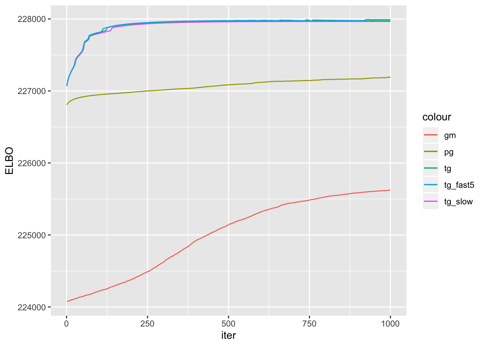
par(mfrow = c(2,2))
## truth
for(i in 1:4){plot(data$L[,i])}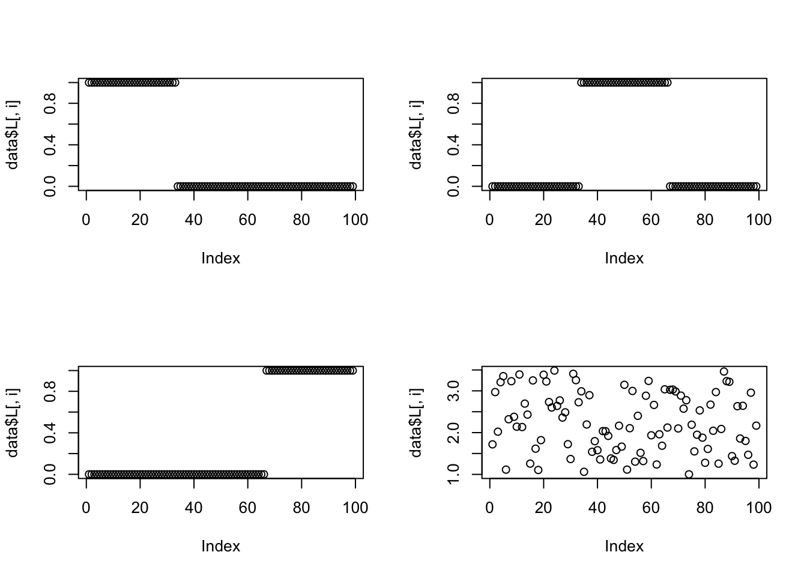
## initialization
for(i in 1:4){plot(data$LF0$W[,i], log = "y")}Warning in xy.coords(x, y, xlabel, ylabel, log): 4 y values <= 0 omitted
from logarithmic plotWarning in xy.coords(x, y, xlabel, ylabel, log): 1 y value <= 0 omitted
from logarithmic plotWarning in xy.coords(x, y, xlabel, ylabel, log): 3 y values <= 0 omitted
from logarithmic plotWarning in xy.coords(x, y, xlabel, ylabel, log): 4 y values <= 0 omitted
from logarithmic plot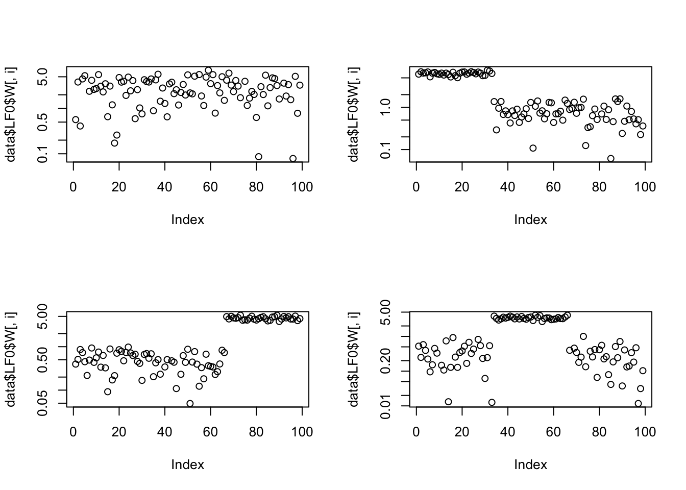
##fit_tg_slow
for(i in 1:4){plot(fit_tg_slow$qg$qls_mean[,i], ylab = "loading", log = "y")}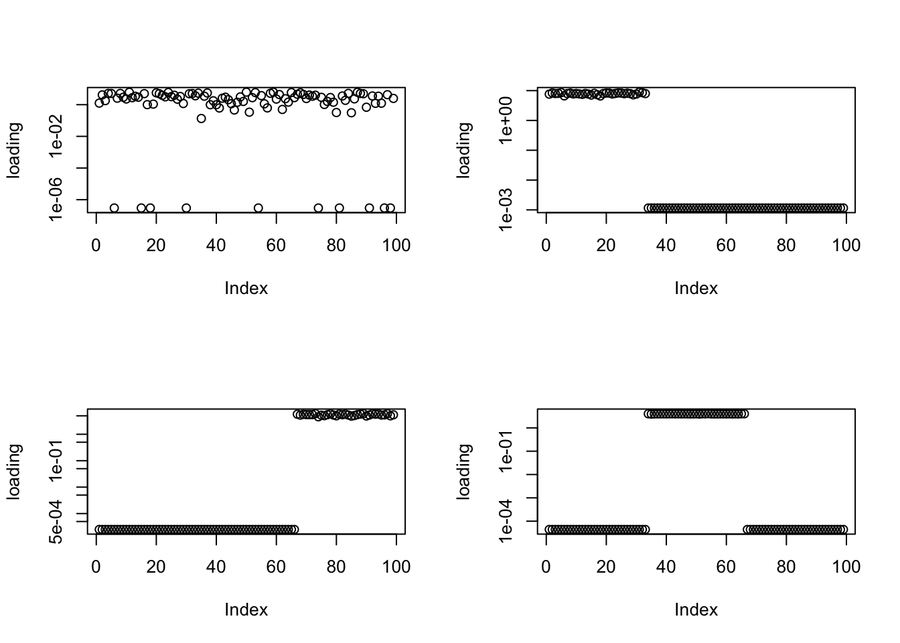
##fit_tg
for(i in 1:4){plot(fit_tg$qg$qls_mean[,i], ylab = "loading", log = "y")}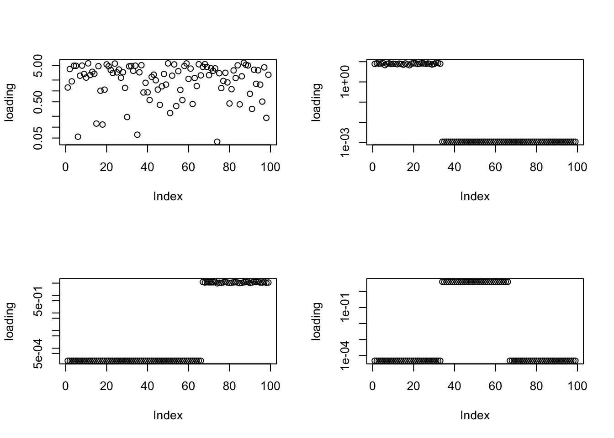
##fit_tg_fast5
for(i in 1:4){plot(fit_tg_fast5$qg$qls_mean[,i], ylab = "loading", log = "y")}##fit_pg
for(i in 1:4){plot(fit_pg$qg$qls_mean[,i], ylab = "loading", log = "y")}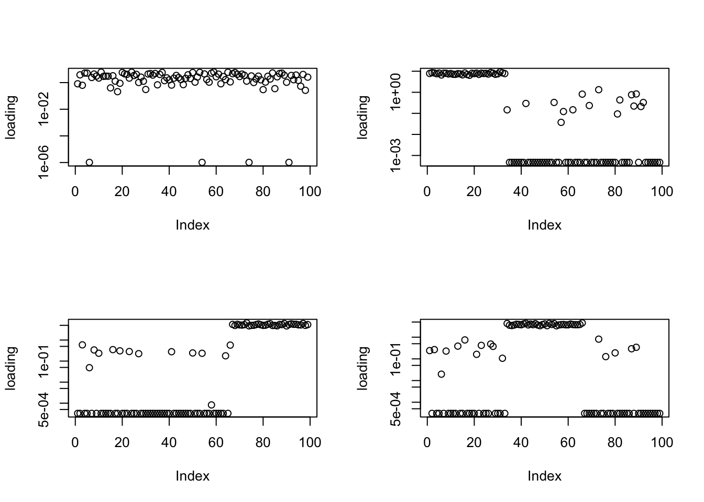
##fit_gm
for(i in 1:4){plot(fit_gm$qg$qls_mean[,i], ylab = "loading", log = "y")}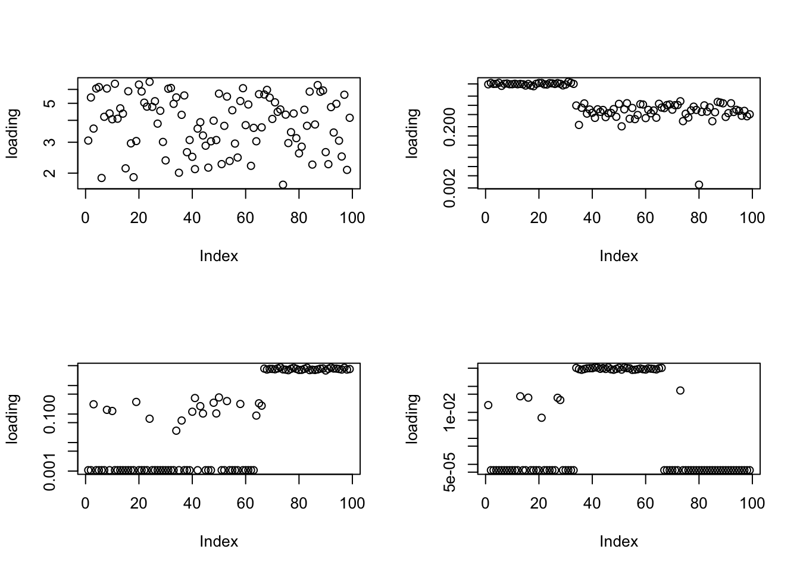
par(mfrow = c(2,2))
## truth
for(i in 1:4){plot(data$F[,i])}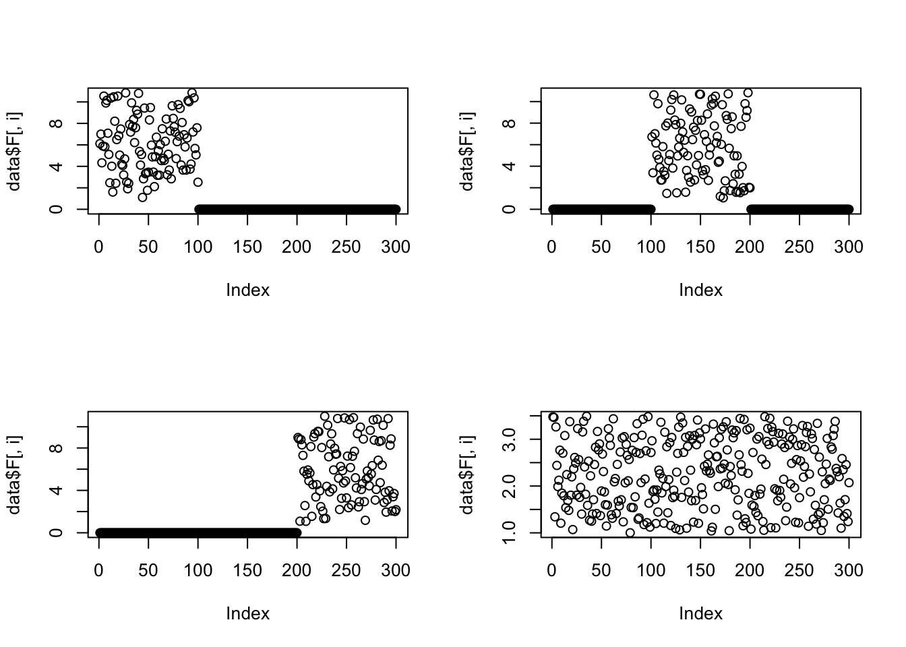
## initialization
for(i in 1:4){plot(data$LF0$H[i,])}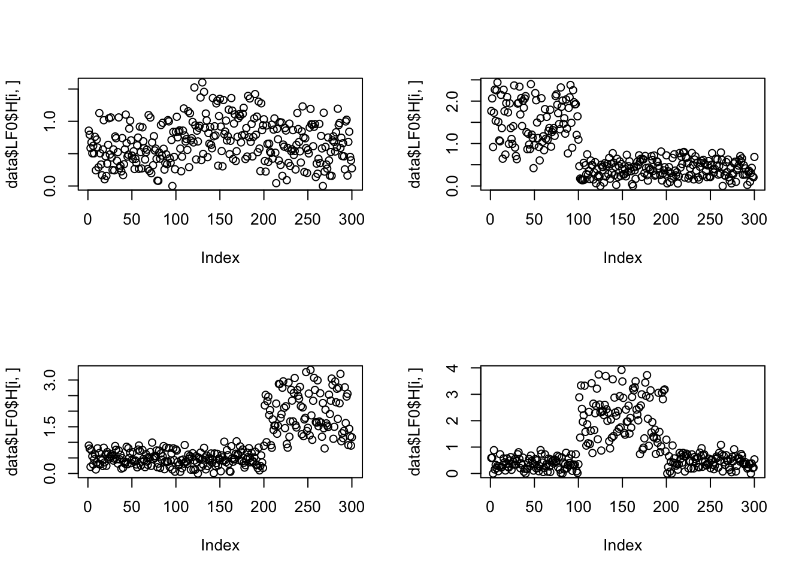
##fit_tg_slow
for(i in 1:4){plot(fit_tg_slow$qg$qfs_mean[,i], ylab = "factor", log = "y")}##fit_tg
for(i in 1:4){plot(fit_tg$qg$qfs_mean[,i], ylab = "factor", log = "y")}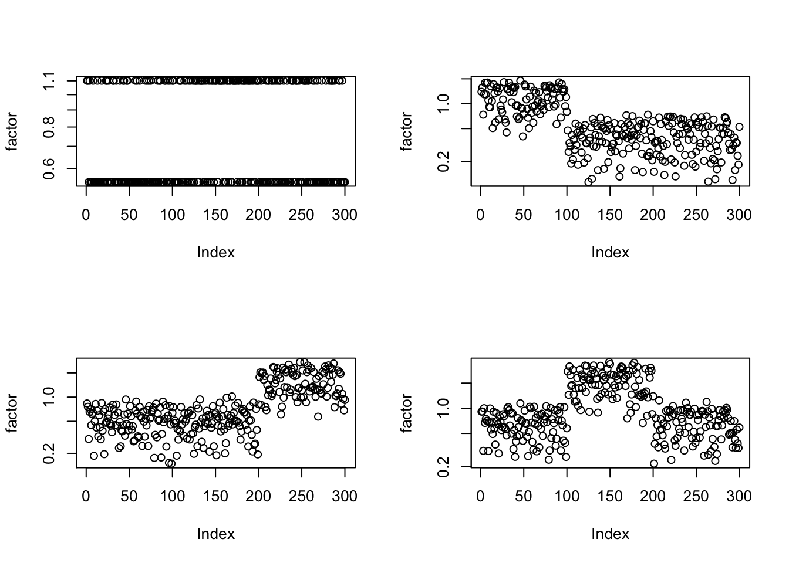
##fit_tg_fast5
for(i in 1:4){plot(fit_tg_fast5$qg$qfs_mean[,i], ylab = "factor", log = "y")}##fit_pg
for(i in 1:4){plot(fit_pg$qg$qfs_mean[,i], ylab = "factor", log = "y")}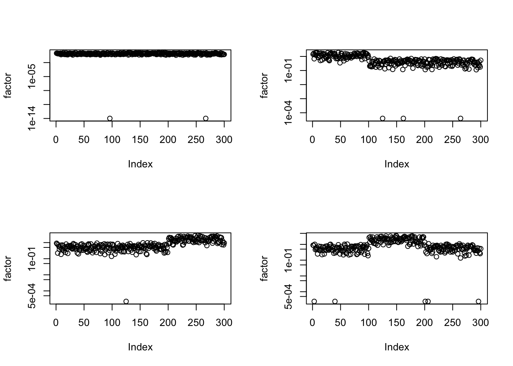
##fit_gm
for(i in 1:4){plot(fit_gm$qg$qfs_mean[,i], ylab = "factor", log = "y")}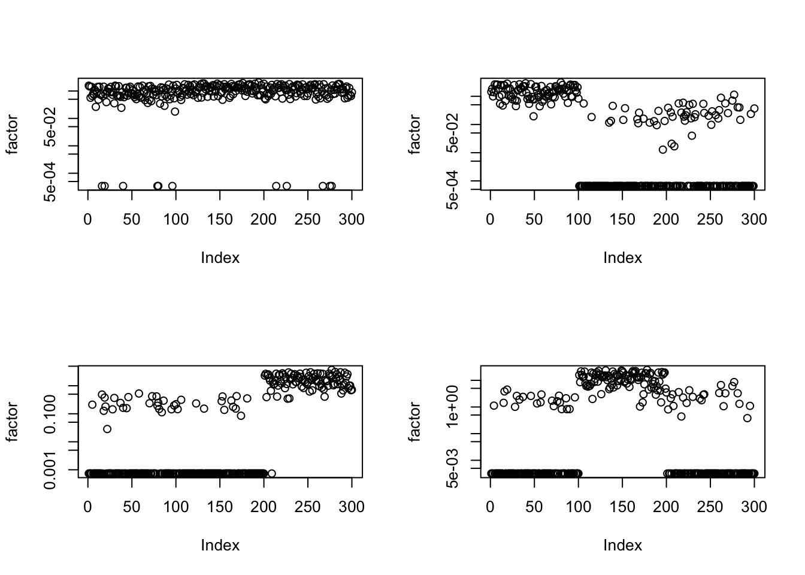
I tried re-estimating grids every \(D\) iterations. However, the ELBO drops a lot each time I change the grid. (Say in the \(l*D + 1\) th ebpmf iteration, I remove the grids for all \(g\)s. So probably in the coordinate-wise update, such a sudden change to all \(g\) might be hard to deal with. May only change grids for one \(g\) at a time?) Also, this often results in empty-cluster error.
I run the ebpmf with ebpm_gamma_mixture2for 5000 iterations. The ELBO gets 25820, still far lower than the other methods.
I compute ebpm_gamma_mixture2 on my macbook (with mixsqp_0.2-3). So it should be even faster running on the more powerful ubuntu machine, as does the other methods. However, in ubuntu machine I used mixsqp_0.3-17, which reports error messages:
Error in verify.likelihood.matrix(L) :
Input argument "L" should be a numeric matrix with >= 2 columns, >= 1 rows, all its entries should be non-negative, finite and not NA, and some entries should be positive
Calls: system.time ... do.call -> <Anonymous> -> mixsqp -> verify.likelihood.matrix
In addition: Warning message:
In mixsqp(L, x0 = g_init$pi, control = control) :
One or more columns of "L" are all zeros; solution entries associated with these columns are trivially zero
sessionInfo()R version 3.5.1 (2018-07-02)
Platform: x86_64-apple-darwin15.6.0 (64-bit)
Running under: macOS 10.14
Matrix products: default
BLAS: /Library/Frameworks/R.framework/Versions/3.5/Resources/lib/libRblas.0.dylib
LAPACK: /Library/Frameworks/R.framework/Versions/3.5/Resources/lib/libRlapack.dylib
locale:
[1] en_US.UTF-8/en_US.UTF-8/en_US.UTF-8/C/en_US.UTF-8/en_US.UTF-8
attached base packages:
[1] stats graphics grDevices utils datasets methods base
other attached packages:
[1] ggplot2_3.2.1
loaded via a namespace (and not attached):
[1] Rcpp_1.0.2 compiler_3.5.1 pillar_1.4.2 later_0.8.0
[5] git2r_0.26.1 workflowr_1.5.0 tools_3.5.1 digest_0.6.22
[9] evaluate_0.14 tibble_2.1.3 gtable_0.3.0 pkgconfig_2.0.3
[13] rlang_0.4.1 yaml_2.2.0 xfun_0.8 withr_2.1.2
[17] stringr_1.4.0 dplyr_0.8.1 knitr_1.25 fs_1.3.1
[21] rprojroot_1.3-2 grid_3.5.1 tidyselect_0.2.5 glue_1.3.1
[25] R6_2.4.0 rmarkdown_1.13 purrr_0.3.2 magrittr_1.5
[29] whisker_0.3-2 backports_1.1.5 scales_1.0.0 promises_1.0.1
[33] htmltools_0.3.6 assertthat_0.2.1 colorspace_1.4-1 httpuv_1.5.1
[37] labeling_0.3 stringi_1.4.3 lazyeval_0.2.2 munsell_0.5.0
[41] crayon_1.3.4